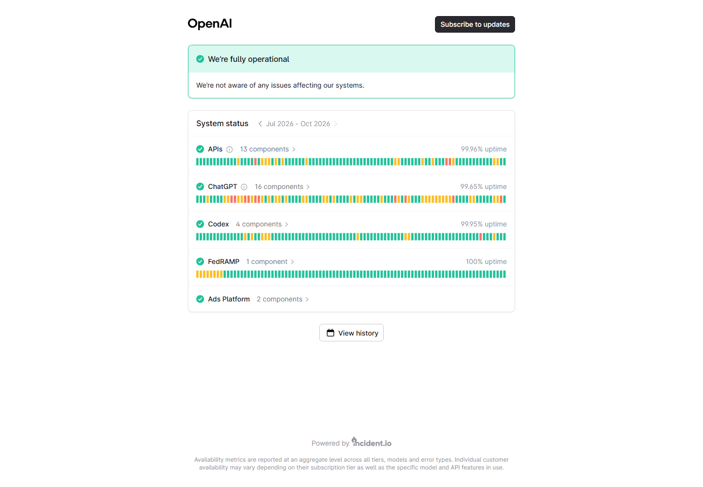

打开 ChatGPT 后只见空白页、登录按钮没有反应、验证页面反复出现，或者对话框能显示却一直转圈，这些现象看起来相似，原因却可能来自服务状态、浏览器数据、本机时间、域名解析、网络策略或账号权限。最有效的做法不是连续刷新，也不是一次性修改很多设置，而是按照“官方服务—浏览器—本地网络—账号”的顺序逐层缩小范围。
一、先判断是哪一种“打不开”
先完整记录页面表现和错误文字。完全无法建立连接，通常与域名解析、网络路径或本机安全软件有关；页面能加载但登录失败，应优先检查 Cookie、时间、登录方式和账号提示；只有消息发送失败，则可能是实时连接、扩展程序或服务端短时异常。不同情况的起点不同。
| 表现 | 优先检查 | 不要急着做 |
|---|---|---|
| 网页完全空白 | 无痕窗口、脚本拦截、浏览器控制台 | 反复重装系统 |
| 域名无法解析 | 其他网站、DNS、系统时间 | 删除全部网络驱动 |
| 登录循环 | Cookie、登录方式、时间与地区提示 | 连续注册多个账号 |
| 消息一直转圈 | 状态页、实时连接、扩展程序 | 频繁提交同一内容 |
| 明确显示权限或地区提示 | 官方支持范围与账号通知 | 忽略页面原文 |
二、第一步先查 OpenAI 官方状态页
当多个设备、多个浏览器在同一时间都出现相似问题时，先访问 OpenAI Status。状态页会列出 ChatGPT、API 等服务是否出现已确认事件。若官方已经标注异常，继续清缓存或改 DNS 通常不会加快恢复；记录事件时间并稍后重试更合适。

状态页显示正常也不代表每个用户都一定正常，它只能说明官方是否确认了较大范围事件。下一步要用另一条网络、另一台设备或另一个浏览器做对照。只改变一个变量，才能知道问题在哪一层。
三、浏览器侧的快速修复顺序
- 核对地址：从官方入口进入，避免旧书签、仿冒页面或多余跳转。
- 打开无痕窗口：它能快速排除多数旧 Cookie、缓存和部分扩展影响，但不会修复系统网络。
- 暂停内容拦截扩展：广告过滤、脚本控制、隐私增强和网页改写扩展可能拦截登录或验证组件。只对当前站点临时停用并测试。
- 清理站点数据：优先只删除 ChatGPT/OpenAI 相关站点数据，不必一开始清空整个浏览器。
- 允许必要功能：确认 JavaScript、Cookie 与安全验证没有被浏览器策略完全禁止。
- 更新浏览器：使用仍在维护的稳定版，并正常重启浏览器进程。
如果无痕窗口可以打开而普通窗口不行，问题大概率在站点数据、扩展或浏览器配置。此时逐个恢复扩展，比全部卸载后凭感觉重装更容易定位。公司设备若由管理员下发策略，不要擅自绕开，应联系管理人员核对允许域名和实时连接设置。
四、网络、时间与 DNS 怎么排查
先确认本机日期、时间和时区正确。时间偏差会影响安全证书和登录令牌。随后测试几个常用网站；如果所有 HTTPS 网站都异常，问题不只针对 ChatGPT。重启路由器前，先保存工作并观察同一网络中的其他设备是否正常。
DNS 负责把域名转换为地址。出现“找不到服务器”“名称无法解析”时，可先在 Windows 终端执行 nslookup chatgpt.com，或在 macOS/Linux 使用同名命令查看是否返回结果。能解析不代表一定能连接，但完全无结果说明应继续检查 DNS、路由器和安全软件。修改 DNS 前记录原值；单位网络应遵循管理员配置。
再做一次网络对照：同一设备换到手机热点，或同一网络换另一台设备。如果只有某台设备失败，检查本机防火墙、浏览器和系统代理；如果同一网络下全部失败，而其他网络正常，则检查路由器、上游网络和网络策略。不要把“测速很快”直接等同于网页长连接稳定。
五、登录失败和账号提示怎么处理
使用最初注册时对应的登录方式。例如账号原本通过 Google、Apple 或 Microsoft 登录，后来直接输入邮箱密码，可能得到不同结果。遇到验证码收不到、账号停用、年龄验证或地区提示时，应阅读完整文字，并通过官方帮助中心或页面提供的渠道处理。
不要把账号借给陌生人代登录，也不要发送浏览器导出的 Cookie。若刚修改密码，应退出其他设备后重新登录。企业或学校工作区还可能受到管理员权限、域名或席位设置影响，这类问题需由工作区管理员核对。
六、桌面应用和手机应用打不开
应用端失败时，先用同一设备的浏览器访问官方网页做对照。网页正常而应用异常，可检查应用更新、系统权限、后台网络限制和本地缓存；两者都失败，再回到网络层。手机还应检查省流量模式、私有 DNS、虚拟网络配置和系统日期。不要从非官方来源安装所谓“修复版”。
若只有文件上传、语音或图片功能异常，应单独测试基础文字对话，并查看应用是否获得相机、麦克风、照片或文件权限。功能级故障与整站打不开不是同一个问题，反馈时要分开描述。
完成修复后，建议连续进行几轮普通对话，并分别测试新建会话、历史记录加载和退出后重新登录。一次页面打开成功只能说明当时连接恢复，连续操作正常才更有参考价值。确认稳定后，再逐步恢复之前暂停的扩展和自定义设置。
七、十分钟标准排查流程
- 保存错误截图、时间、设备和浏览器版本。
- 查看官方状态页是否存在事件。
- 核对官方地址并尝试无痕窗口。
- 临时停用当前站点的拦截扩展。
- 删除当前站点数据并重新登录。
- 核对系统时间、证书提示和 DNS 解析。
- 用另一浏览器、另一设备、另一网络各做一次对照。
- 根据结果只处理对应层级，不要同时大改设置。
八、仍然失败时，怎样提交有效反馈
向官方支持或网络管理员反馈时，提供发生时间、完整报错、页面地址、设备系统、浏览器或应用版本、是否在另一网络复现，以及已经做过哪些测试。截图前遮住邮箱、对话内容、令牌和个人信息。描述“网页首页可打开，但发送消息后 30 秒报错”比只写“打不开”更容易获得准确帮助。
最后再强调一次：先确认官方状态，再做浏览器对照，然后检查本机网络和账号提示。保持每次只改变一个变量，通常比频繁切换大量设置更快找到原因。